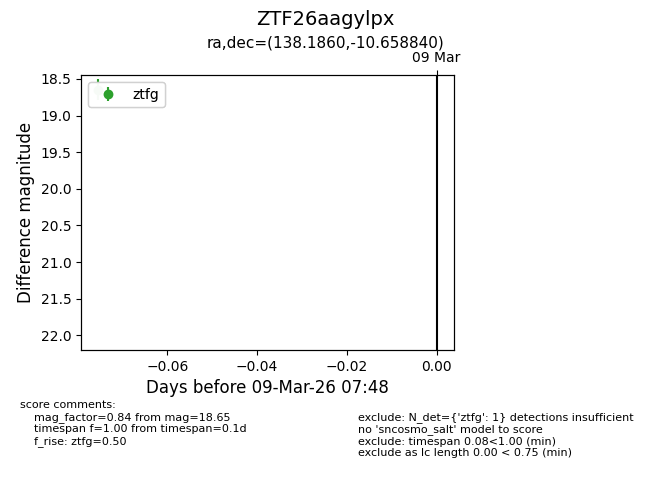
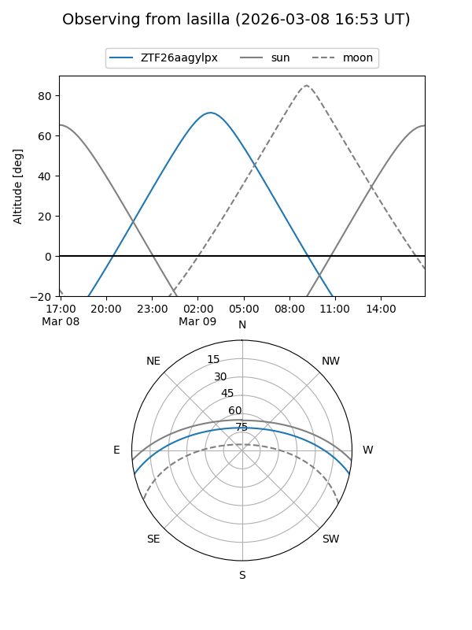
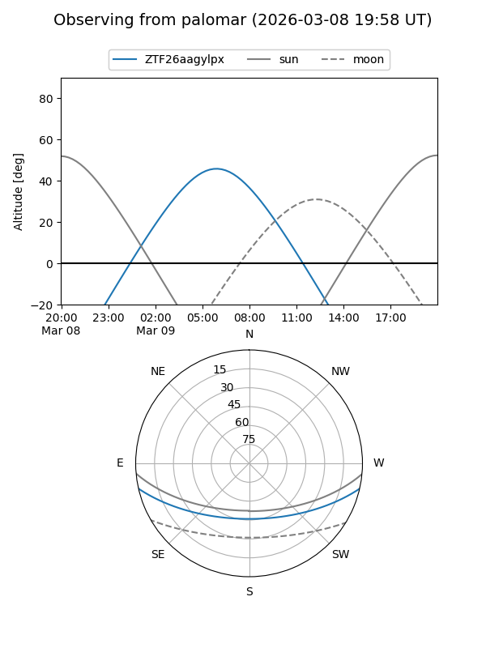

ZTF26aagylpx
Target ZTF26aagylpx at 2026-03-09 07:49
Aliases and brokers:
FINK: link
Lasair: link
ALeRCE: link
alt names
ZTF26aagylpx (ztf,fink_ztf)
Coordinates:
equatorial (ra, dec) = 138.1860,-10.65884
equatorial (HMS+DMS) = 09:12:44.65,-10:39:31.82
galactic (l, b) = (240.7874,+24.92329)
Flags:
Photometry:
last ztfg=18.65
1 ztfg detections
Lightcurve

Visibility


Additional plots